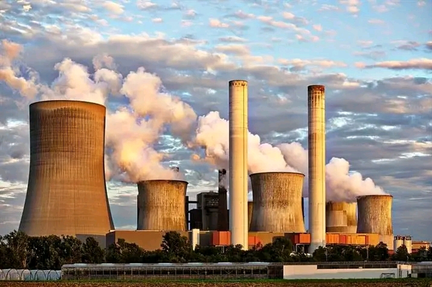
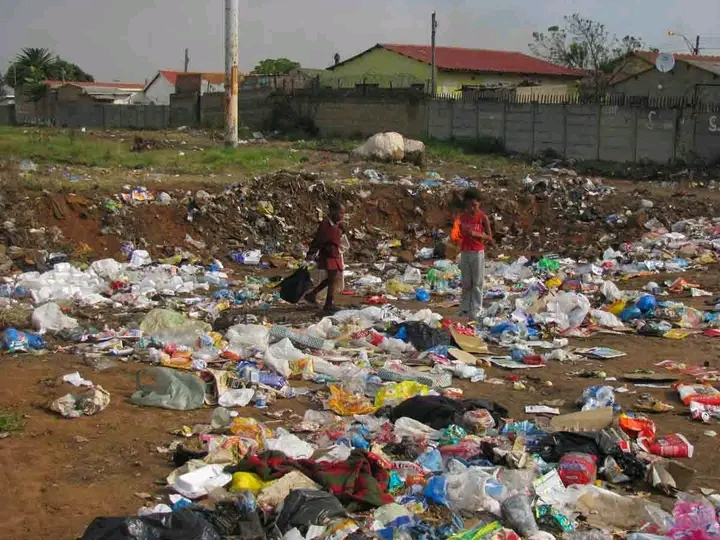

Welcome to my first website
Pollution
Pollution is the introduction of harmful materials into the environment. These harmful materials are called pollutants. Pollutants can be natural, such as volcanic ash. They can also be created by human activity, such as trash or runoff produced by factories.
Types of pollution
There are many types of pollution but some majors are mentioned below:
1.Air.
2.Water.
3.Land.
Air:
Air pollution is the contamination of air due to the presence of substances in the atmosphere that are harmful to the health of humans and other living beings, or cause damage to the climate or to materials.

Water:
Water pollution is the contamination of water bodies, usually as a result of human activities, so that it negatively affects its uses. Water bodies include lakes, rivers, oceans, aquifers, reservoirs and groundwater.
Land:
Land pollution refers to the destruction or a decline in quality of the earth's surface as a result of human actions. This could include anything from mining to agriculture to building, and consequences may be intentional or unintentional.
